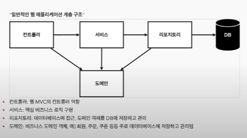
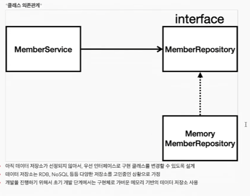

<?php
	include_once "../common.php";
	include_once "../head.php";

?>


<div class="java_spring_content_box">
	<h1>회원 관리 예제 - 백엔드 개발 </h1>

		<ul class='color_red'>
			<li>{비즈니스 요구사항 정리}</li>
			<li>{회원 도메인과 리포지토리 만들기}</li>
			<li>{회원 리포지토리 테스트 케이스 작성}</li>
			<li>{회원 서비스 개발}</li>
			<li>{회원 서비스 테스트}</li>
			
		</ul>


</div><!-- /java_spring_content_box -->
 


<div id='' class="java_spring_content_box">
	<h3>비즈니스 요구사항 정리</h3>

	<ul>
		<li>데이터 : 회원ID, 이름</li>
		<li>기능 : 회원 등록, 조회</li>
		<li>아직 데이터 저장소가 선정되지 않음 (가상의 시나리오)</li>
	</ul>

	
	
	

</div><!-- /java_spring_content_box -->
 


<div id='' class="java_spring_content_box">
	<h3>회원 도메인과 리포지토리 만들기</h3>

</div><!-- /java_spring_content_box -->


